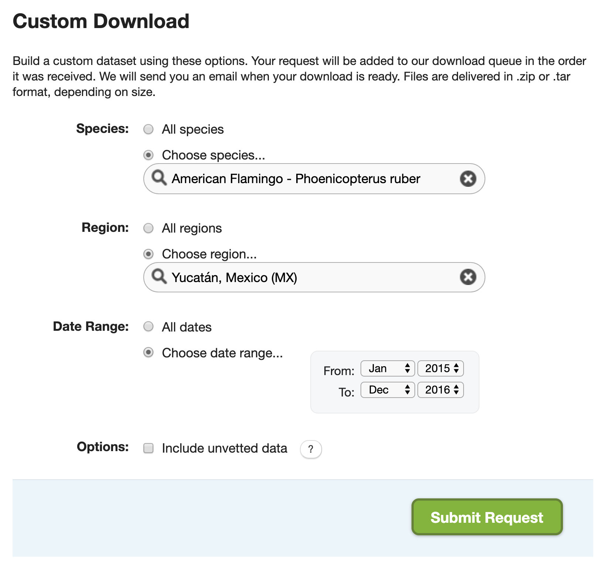
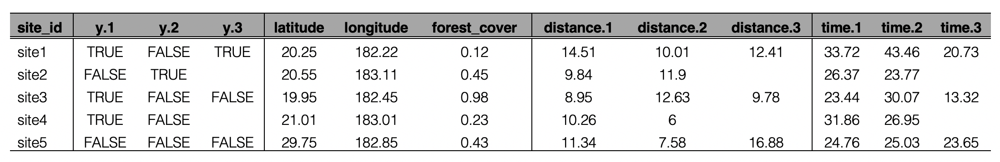

Lesson 8 Advanced Topics
8.1 Custom downloads
The full EBD is massive (over 200 GB) and takes a long time to process with auk (typically several hours). In some cases, there is a way around these issues. On the EBD download page, there is a Custom Download form that allows you to only download a subset of the EBD for a given species, within a region, and for a range of dates. After submitting this form, the request will be processed on the eBird servers and a email will be sent to you with instructions for downloading the EBD extract.

Recall from the lesson on zero-filling, that we extracted American Flamingo records from Mexico’s Yucatán state in January, and produced presence-absence data from this extract. Let’s try to do this with the Custom Download form. After the request is submitted an email will arrive with instrustions for downloading the following file. Download and unarchive this file, placing the text file in the data/ subdirectory of your project.
tf <- "data/temp.zip"
download.file("https://github.com/mstrimas/ebp-workshop/raw/master/raw-data/ebd_MX-YUC_grefla2_201501_201612_relApr-2019.zip", tf)
unzip(tf, "ebd_MX-YUC_grefla2_201501_201612_relApr-2019.txt", exdir = "data/")
unlink(tf)It will quickly become clear that there are two issues with this approach. First, the set of filters available in the Custom Download form is limited. For example, there’s no option to only extract observations from complete checklists or any way to get observations from a given month from any year. To address this, we can apply the additional filters after we’ve imported the data in R. Specifically, we’ll only keep observations from complete checklists in June.
library(auk)
library(lubridate)
library(tidyverse)
ebd <- read_ebd("data/ebd_MX-YUC_grefla2_201501_201612_relApr-2019.txt") %>%
filter(month(observation_date) == 1,
all_species_reported)The second challenge is that the Custom Download form only provides the positive observations from the EBD, it doesn’t provide the corresponding Sampling Event Data for zero-filling. However, the Sampling Event Data is much smaller than the EBD and quicker to process. So, we can easily filter this file using the same set of filters we’ve already applied to the EBD. Note that auk_sampling() is used in place of auk_ebd() when we’re only filtering the sampling data and not the EBD.
f_sed <- "data/sed-only_amefla.txt"
sed_filt <- auk_sampling("ebd_sampling_2015-2016_yucatan.txt") %>%
auk_state("MX-YUC") %>%
auk_date(c("*-01-01", "*-01-31")) %>%
auk_complete() %>%
auk_filter("data/sed-only_amefla.txt")
sed <- read_sampling(f_sed)Finally, we can join these combine those two dataframes together with auk_zerofill() to produce zero-filled presence-absence data.
ebd_zf <- auk_zerofill(ebd, sed, collapse = TRUE)We’ve produced exactly the same data as in Lesson 6; however, we’ve done so avoiding having to deal with the full EBD.
8.2 Preparing for occupancy modeling
One common use of eBird data is for occupancy modeling with the R package unmarked. This workshop won’t cover occupancy modeling; however, unmarked requires data to be formatted in a very particular way and auk contains functions to prepare data in this way, which we’ll cover in this lesson. We’ll continue with the American Flamingo data from the previous section.
First, we need to extract the subset of observations that are suitable for occupancy modeling. In particular, occupancy models typically require data from repeated sampling events to a single site during a time frame over which the population can be considered closed. For example, let’s define the period of closure as the entire month of January in each year and a repeat visit as the same observer revisting a site with same latitude and longitude at least twice. The auk function filter_repeat_visits() is designed to extract a subset of eBird data of this form.
visits <- filter_repeat_visits(ebd_zf,
min_obs = 2, max_obs = 10,
annual_closure = TRUE,
date_var = "observation_date",
site_vars = c("latitude", "longitude",
"observer_id"))
# entire data set
nrow(visits)
#> [1] 112
# reduced data set
nrow(ebd_zf)
#> [1] 336
# how many individual sites there are
n_distinct(visits$site)
#> [1] 39Three new columns are added to the dataset when using the function filter_repeat_visits(): site is a unique site ID, closure_id identifies the primary period of closure (in this example the year), and n_observations is the number of visits to each site.
Now that we have data suitable for occupancy modeling, we need to reformat the data to be accepted by unmarked. The documentation for the unmarked function formatWide() outlines the details of this format. In the EBD, each row is a checklist; however, unmarked requires each row to be a site with the first column specifying the site ID and subsequent columns specifying whether the species was observed on each of the visits to that site. The next group of columns contains site-level covariates, those that vary between sites but are constant across visits to the same site, such as latitude, longitude, and habitat covariates. Finally, there are several groups of columns containing observation-level covariates, such as distance and duration. Each covariate gets a set of columns corresponding to the columns specifying the presence-absence of the species.

The auk function format_unmarked_occu() takes care of the reformatting for you. response is the variable that you will be using as the response in occupancy modeling (e.g. observation_count or species_observered), site_covs are the site-level covariates, and obs_covs are the observation-level covariates.
visits_um <- format_unmarked_occu(visits,
site_id = "site",
response = "species_observed",
site_covs = c("latitude", "longitude"),
obs_covs = c("time_observations_started",
"duration_minutes",
"effort_distance_km",
"number_observers",
"protocol_type"))Exercise
Explore both the visits_um and visits dataframes. They contain the same data in different formats. Try to understand how one dataframe was transformed into the other.